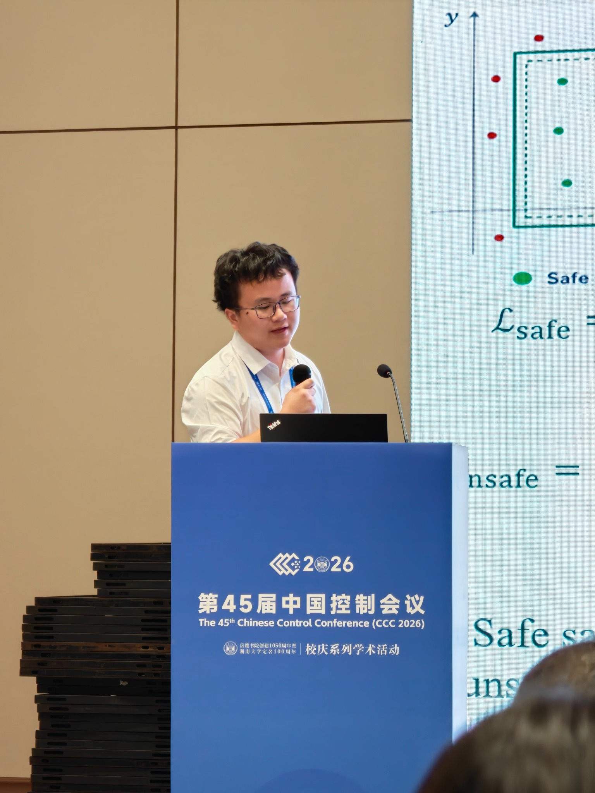
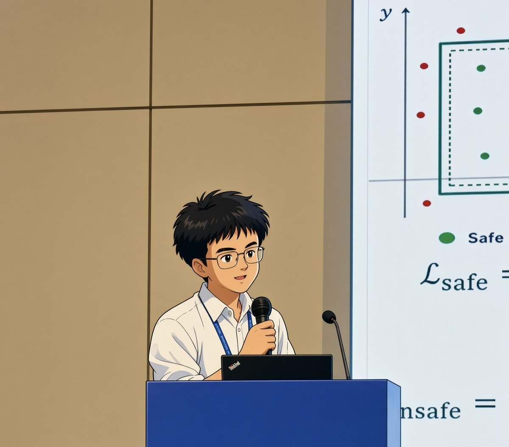
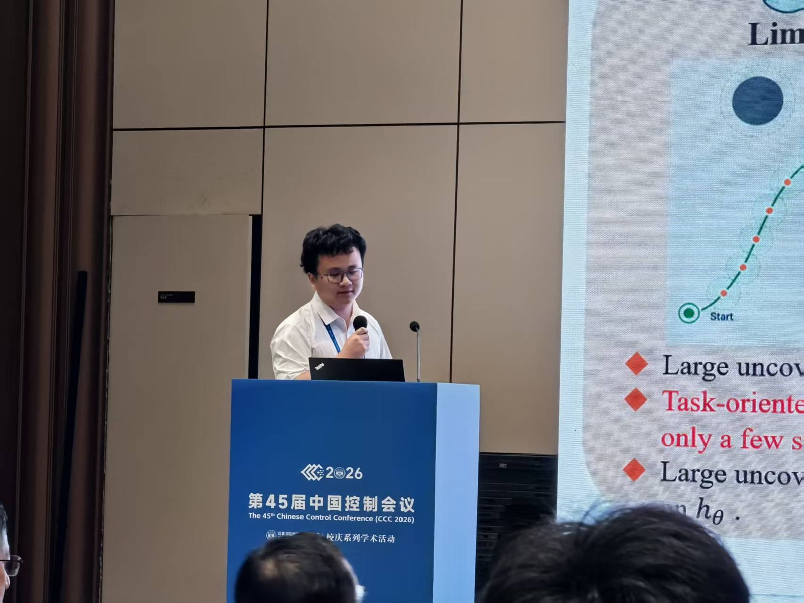

Loading profile…
Ph.D. Researcher · University of Macau
Wenjun Luo
Barrier functions and learning for safe autonomous systems.
Ph.D. student in Electromechanical Engineering at the University of Macau.
- CBFs & MCBFs
- Deep & reinforcement learning
- Autonomous system safety



01
About
02
Research interests
Safety-critical control of unmanned autonomous systems through barrier-function theory and learning-based methods.
Loading research interests…
03
Education
Loading education…
04
Activities & conferences
Selected conference presentations and professional development programs.
Loading activities…
05
Publications
Selected journal articles, conference papers, and current manuscripts.
Loading publications…
06
Academic service
Verified peer-review contributions to journals in control, systems, robotics, and aerospace engineering.
Loading academic service…
07
Awards & honors
Loading awards…
Contact
Let’s discuss research.
I welcome conversations about safety-critical control, autonomous systems, and research collaboration.
Global reach
Visitors around the world
See the countries and regions from which people have visited this homepage.